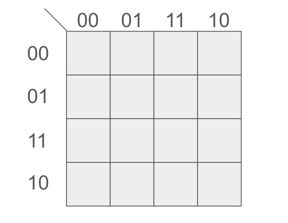
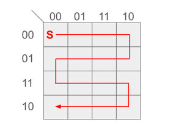
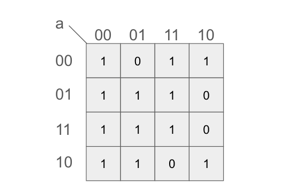
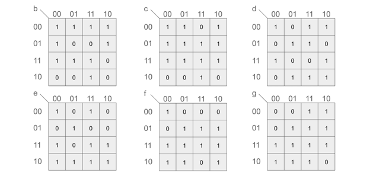
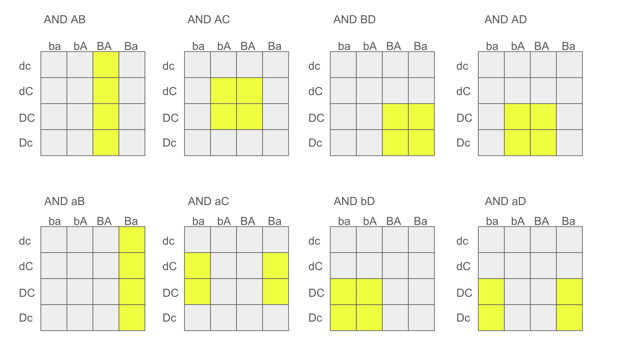
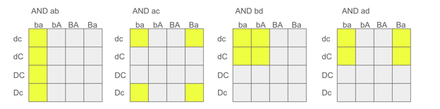

2025 · Digital Logic + Boolean Design
4517 Gray Code
Built a Gray-code-to-hexadecimal display system using Karnaugh mapping, Boolean simplification, logic gates, and a seven-segment display.

Video Demonstration
Working demonstration
The project video shows the physical build, behaviour, and final result.
 ▶ Watch on YouTube
▶ Watch on YouTube
Project Overview
Translate Gray code into readable hexadecimal output through hardware logic.
The project required deriving simplified Boolean expressions for each display segment, then implementing the logic in hardware so the display matched the Gray-code count.
What I built
- Gray code counting input
- K-map simplification for display segments
- Logic-gate implementation
- Seven-segment hexadecimal output
Technical Skills
Skills demonstrated
Boolean simplification
Applied directly in the design, build, debugging, or final integration of the project.
Karnaugh mapping
Applied directly in the design, build, debugging, or final integration of the project.
Logic design
Applied directly in the design, build, debugging, or final integration of the project.
Display decoding
Applied directly in the design, build, debugging, or final integration of the project.
Circuit debugging
Applied directly in the design, build, debugging, or final integration of the project.
Build Story
Gray-code K-map logic graphics
Prototype implementation
The image to the right shows the Gray-code counting path through the Karnaugh map, where only one bit changes between adjacent states.

Display output
The image to the right shows one populated K-map for a seven-segment output, marking which Gray-code states turn that segment on.

Truth-table setup
The image to the right shows the complete set of K-map values used to derive the segment logic for the hexadecimal display.

K-map simplification
The image to the right shows one grouping pass in the K-map simplification process, where adjacent ones are combined into simpler logic terms.

Final decoder reference
The image to the right shows another grouping pass for the display logic, demonstrating how the Boolean expressions were reduced across multiple segments.
